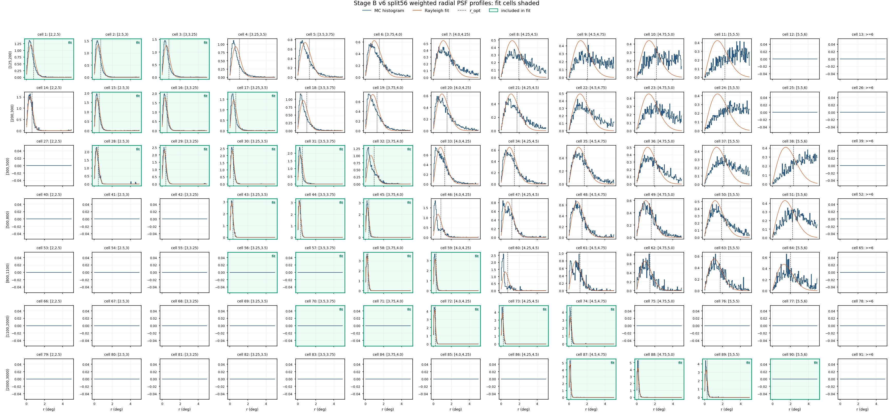

This report is the v6 mainline Crab SED apply chain for model/data identifier 64748, covering 2022-01-01 through 2022-06-30. It uses the split56 physical predE binning with [5,6) split into [5,5.5) and [5.5,6), while 64670 is kept only as a January-February comparison reference.
Split56 shape check passed. 91 candidate cells, 27 fit cells, 7 Nhit points, and 12 predE points.
Split-child gate exception. The right split child is retained because the old baselinev4 [2000,3000) x [5,6) fit cell is contractually split into two fit cells. Cell-level selector fields record the default count gate and the explicit split-child effective gate.
Cell
Nhit
predE
MC count
Default gate
Effective gate
ridge fraction
Exception
89
[2000,3000)
[5,5.5)
6434
1000
500
1
0
90
[2000,3000)
[5.5,6)
799
1000
500
0.1267
1
Executive Result
candidate cells
91
7 Nhit x 13 predE
fit cells
27
baselinev4 plus split high-energy cell
Stage C files
3,969
entry mismatches 0
Selected rows
80,017,935
configured-cell rows after cuts
Stage E signal
67.77 sigma
N_on 372,020; B_on 3.322015e+05
Preferred Stage F
LOGPAR
chi2/ndof 321.8/24
Stage G points
7/12
Nhit / predE
LogPar
n/a
alpha n/a, beta n/a
Gate
Status
Evidence
candidate / fit cells
pass
91 candidates; 27 fit cells
split child fit cells
warning
2 children included; count-gate exceptions 1
Stage A nominal response
pass
primary_thrown_response; available
Stage B PSF
warning
91 cells; warning cells 58, fit subset 10
Stage A aperture response
pass
primary_thrown_aperture_conditioned_response; PSF path is split56
Stage C observation
pass
3969 files; 80,017,935 selected rows; rough live time 125.670 d
Stage D background
warning
26 warning cells; 0 in fit subset
Stage E signal
pass
formal sigma 67.77
Stage F fit
pass
preferred logpar
Stage G SED
pass
7 Nhit points; 12 predE points
Paths And Provenance
Main-flow paths are split56-specific and preserve the v6 _64748 model/cache provenance. Any 64670 mention is an explicit two-month comparison boundary, not a main-flow input.
Nominal Stage A is primary_thrown_response; the final fit uses primary_thrown_aperture_conditioned_response. Stage B wrote 91 PSF rows. Pale green panels mark the 27 split56 fit cells in the radial PSF grid.
Stage B split56 r_opt by candidate cellStage B split56 effective events by candidate cellStage B split56 radial PSF profiles

Stage B split56 radial PSF profiles; green panels enter the fit
Stage C-D-E Diagnostics
Stage C selected 80,017,935 configured-cell rows. Stage D produced the annulus-normalized quadratic ROI-local background with 26 warning cells, including 0 in the fit subset. Stage E passed the total-sigma gate.
Metric
Value
Stage C processed files
3,969
Stage C rough live time
125.670 d
Stage D warning cells
26 / 91
Stage D warning cells in fit subset
0 / 27
Stage E total N_on
372,020
Stage E total B_on
3.322015e+05
Stage E total excess
39818.5
Stage E formal sigma
67.7697
Stage D ROI excess gridStage D annulus residual diagnosticsStage E formal sigma gridStage E on/background grid
Stage F Fit
Stage F uses the split56 aperture-conditioned response, split56 containment-1 signal, and the split56 baselinev4 selector. The fit is diagnostic unless the remaining cell-level residuals are accepted by a later review.
Fit
Valid
chi2/ndof
p
phi0
gamma/alpha
beta
PL conservative
True
495.8/25
5.715e-89
n/a
n/a
n/a
LogPar conservative
True
321.8/24
6.604e-54
n/a
n/a
n/a
PL sqrt-N
True
884.1/25
2.089e-170
n/a
n/a
n/a
LogPar sqrt-N
True
545/24
7.166e-100
n/a
n/a
n/a
Cell
Bin
Excess
Err
LogPar model
Pull
1
[125,200)[2,2.5)
-712.5
353
2885
-10.2
2
[125,200)[2.5,3)
8752
453
8351
0.887
3
[125,200)[3,3.25)
1873
220
1418
2.07
15
[200,300)[2.5,3)
6880
211
5921
4.54
16
[200,300)[3,3.25)
3970
151
2837
7.5
17
[200,300)[3.25,3.5)
1145
121
901.8
2.01
28
[300,500)[2.5,3)
1435
79.2
1838
-5.1
29
[300,500)[3,3.25)
4014
109
3871
1.3
30
[300,500)[3.25,3.5)
2831
94.8
2661
1.79
31
[300,500)[3.5,3.75)
788.1
64
753.9
0.533
32
[300,500)[3.75,4.0)
394.3
70.2
210.4
2.62
43
[500,800)[3.25,3.5)
1730
59.3
1903
-2.92
44
[500,800)[3.5,3.75)
1450
54.3
1673
-4.12
45
[500,800)[3.75,4.0)
507.8
34.1
514.9
-0.208
56
[800,1100)[3.25,3.5)
202
45.1
189.7
0.273
57
[800,1100)[3.5,3.75)
848
102
731.4
1.15
58
[800,1100)[3.75,4.0)
523.5
29.9
581.1
-1.93
59
[800,1100)[4.0,4.25)
183.9
19.1
159.1
1.3
70
[1100,2000)[3.5,3.75)
21.08
24.6
96.13
-3.05
71
[1100,2000)[3.75,4.0)
249.9
64.9
370.8
-1.86
72
[1100,2000)[4.0,4.25)
321.3
21.1
315
0.298
73
[1100,2000)[4.25,4.5)
176.6
16
113.3
3.94
74
[1100,2000)[4.5,4.75)
72.62
10.5
19.38
5.09
87
[2000,3000)[4.5,4.75)
12.94
4.8
11.25
0.352
88
[2000,3000)[4.75,5.0)
3.649
5.86
5.846
-0.375
89
[2000,3000)[5,5.5)
13.3
8.04
0.9611
1.53
90
[2000,3000)[5.5,6)
19.78
9.18
0.01048
2.15
Stage F model counts versus observed excessStage F LogPar pull gridStage F theta exposure
Stage G Diagnostic SED
Stage G freezes the preferred Stage F spectrum with phi0=2.5299e-12, alpha=2.709, beta=0.1496 at 3 TeV. Actual point counts are 7 Nhit and 12 predE.
Nhit group
Cells
E_eff TeV
E2 dN/dE
Err
chi2/ndof
StageF ratio
Full-array PL ratio
[125,200)
1;2;3
0.5644
4.3118e-11
2.313e-12
102.6/2
0.88
0.716
[200,300)
15;16;17
0.8555
5.4145e-11
1.267e-12
13.78/2
1.24
1.2
[300,500)
28;29;30;31;32
1.356
3.6271e-11
6.967e-13
37.99/4
0.997
1.1
[500,800)
43;44;45
2.591
2.2630e-11
5.359e-13
2.841/2
0.899
1.07
[800,1100)
56;57;58;59
4.212
1.7007e-11
7.739e-13
6.207/3
0.967
1.13
[1100,2000)
70;71;72;73;74
8.054
1.0353e-11
5.435e-13
53.19/4
1.06
1.08
[2000,3000)
87;88;89;90
43.41
1.2936e-12
4.624e-13
7.197/3
1.1
0.43
PredE group
Cells
E_eff TeV
E2 dN/dE
Err
chi2/ndof
StageF ratio
Single cell
[2,2.5)
1
0.3194
-1.2980e-11
6.426e-12
1.0389e-31/0
-0.247
True
[2.5,3)
2;15;28
0.6483
4.8180e-11
1.163e-12
46.97/2
1.02
False
[3,3.25)
3;16;29
1.177
4.3478e-11
9.557e-13
37.81/2
1.12
False
[3.25,3.5)
17;30;43;56
1.936
2.9740e-11
6.939e-13
15.43/3
0.986
False
[3.5,3.75)
31;44;57;70
3.184
1.9471e-11
6.414e-13
14.5/3
0.892
False
[3.75,4.0)
32;45;58;71
5.297
1.3527e-11
5.700e-13
11.18/3
0.933
False
[4.0,4.25)
59;72
9.114
9.0631e-12
5.047e-13
0.9725/1
1.05
False
[4.25,4.5)
73
15.82
7.2228e-12
6.563e-13
0/0
1.56
True
[4.5,4.75)
74;87
28.79
4.5892e-12
7.147e-13
14.24/1
2.15
False
[4.75,5.0)
88
58.76
4.5946e-13
7.380e-13
2.2965e-32/0
0.624
True
[5,5.5)
89
95.9
4.4920e-12
2.716e-12
0/0
13.8
True
[5.5,6)
90
241.7
1.0737e-10
4.982e-11
0/0
1.89e+03
True
Stage G split56 SED overlayStage G split56 SED ratiosStage G split56 cell grouping counts
64670 Reference Boundary
The main apply flow in this report uses model/data identifier 64748 for the half-year interval 2022-01-01 through 2022-06-30. Identifier 64670 is retained only as an explicit model-comparison reference for 2022-01 and 2022-02; its local March-June ROOT outputs were removed after confirming the IHEP backup and preserving recovered-time metadata.